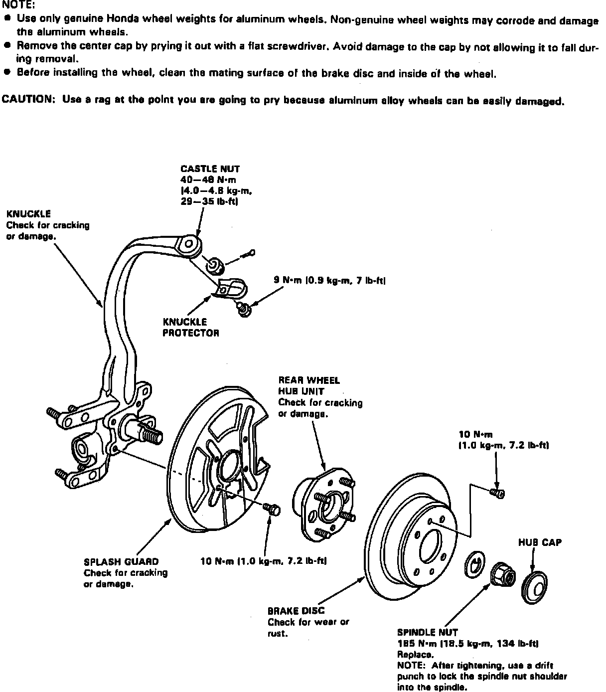

Rear
Fig. 12 Exploded View Of Hub Carrier & Rear Axle Shaft:

1. Raise and support rear of vehicle.
2. Remove rear wheels.
3. Set parking brake.
4. Remove hub cap, then spindle nut locking tab and spindle nut, Fig. 12.
5. Remove brake disc attaching screws.
6. Release parking brake lever.
7. Remove brake hose bracket attaching bolts.
8. Remove caliper bracket attaching bolts, then using suitable wire, hang caliper assembly aside.
9. Install two 8 x 12 mm bolts to brake disc, then turn each two turns at a time to remove disc from hub.
10. Remove hub assembly from knuckle.
11. Reverse procedure to install. Tighten hub nut to 134 ft. lb. and use a drift punch to lock the spindle nut shoulder into the spindle.